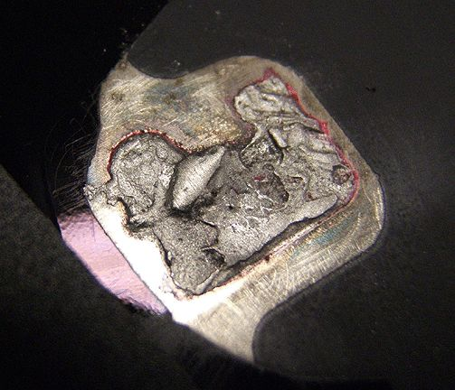
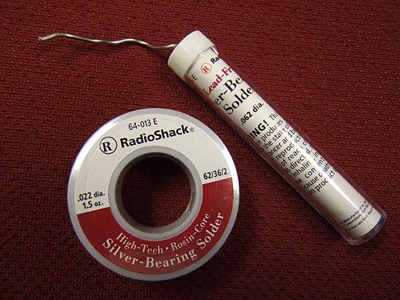
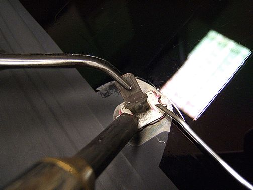
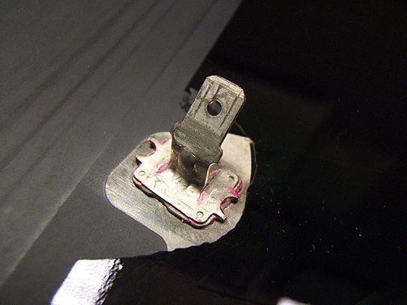
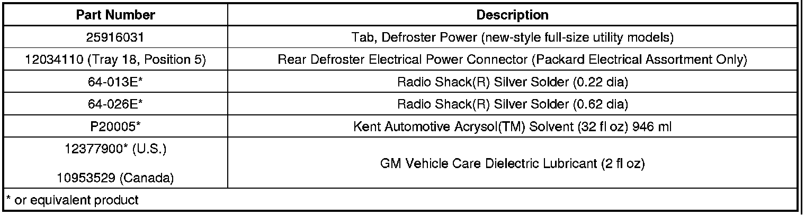
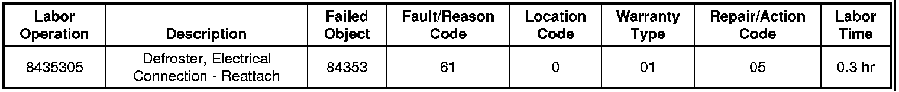

A/C - Window Defroster Contact/Tab Repair Information
INFORMATIONBulletin No.: 03-08-48-006H
Date: April 11, 2011
Subject: Repair Information for Reconnection of Rear Window Defroster Contact or Tab
Models:
2000-2012 GM Passenger Cars and Trucks
2003-2009 HUMMER H2
2006-2010 HUMMER H3
2005-2009 Saab 9-7X
2007-2010 Opel GT
2007-2008 Daewoo G2X
Equipped With Electric Rear Window Defroster - RPO C49
Supercede:
This bulletin is being revised to add the 2012 model year. Please discard Corporate Bulletin Number 03-08-48-006G (Section 08 - Body and Accessories).
Repair Suggestions
Soldering Defroster Contact Tabs
In many cases the terminal tab will still be in the connector when you examine the vehicle. For Chevrolet Tahoe, Suburban, GMC Yukon, and Cadillac Escalade vehicles (with moveable glass), always replace the defroster tab (GM P/N 25916031) and the defroster electrical power connector (P/N 12034110). For all other vehicles, reconnect the original defroster tab.
In most applications it is preferable to create a new solder connection to reattach a separated rear defroster tab. If you take note of the steps below, it is possible to create a new solder joint that is equal to, or stronger than, the original. The generic procedure below is not very time intensive, but does include minor preparation work to create a good bonding surface. Be sure to follow each of the steps, as combined they will produce the strongest bond possible. Please consider the following before attempting the repair:
- Soldering introduces significant heat to the glass window of the vehicle. When performing the re-connection of the tab, use only the heat required to do the job. Pre-heat the soldering iron and have the solder in your other hand, ready to go, the moment you have enough heat to melt the solder.
- If it is winter, bring the vehicle into the service garage and remove any snow from the back window area. Allow time for the glass to warm to the temperature inside the building. Soldering creates a "hot spot" in the glass. DO NOT solder on cold glass.
Caution
Heating the glass excessively, or repeatedly without time to cool, may result in glass breakage. ALWAYS wear safety glasses when performing this repair!
- You MUST use a silver-bearing solder to make the connection. DO NOT attempt this repair with conventional tin/lead alloy solders. Silver bearing solder will adhere to the electrical buss bar, making a strong and lasting repair.
- Protect surfaces under the area to be soldered. It is very easy to drip solder when performing this repair. Placing a shop towel under the soldering area is sufficient protection.
Soldering Procedure
1. It is imperative to remove and replace the rear defroster electrical power connector by crimping a new connector to the feed wire. The proper connector P/N 12034110 can be found in the Packard Electrical Assortment, Tray 18, Position 5.
- Insert Delphi pick 12094430 to depress the locking tab on the terminal.
- Insert Delphi pick 12094429 to release the secondary lock tab.
Important
DO NOT re-use the existing defroster tab on new-style full-size utility vehicles with moveable glass.
2. Connect the electrical connector to the defroster tab. Fully engage the connector. An improperly seated connector may cause excessive resistance and impede the proper operation of the defroster. Add a small bead of solder to mate the electrical connector tab to the defroster tab.

3. Prepare the surface of the used defroster tab (not required for new tabs on new-style full-size utility models) and the defroster buss bar with fine grain (500 grit) sandpaper or Emery cloth. It is not necessary to remove all of the original solder, but it should be scuffed sufficiently so that no oxidation is present. The photo above shows a close up of a properly prepared surface.
Tip
You may want to mask the glass around the contact area with tape. This is easy to do and will allow you to safely prepare the contact surface without the risk of scratching the glass or the black painted shading.
Important
Most rear glass has a black painted masking around the edge of the glass. When cleaning up the connection surface, be very careful not to damage the surface of the black shading or the surface of the glass.

4. Wipe the newly prepared contact area with Kent Automotive* Acrysol(TM) (or equivalent) to remove any residual oil or dirt.


Important
You MUST use a silver-bearing solder to make the solder joint. DO NOT attempt this repair with conventional tin/lead alloy solders. Most suppliers have this type of solder available and it is available nationally at Radio Shack(R)*. It is sold in several diameters and either are acceptable for this repair.
5. For this step, it is permitted that two technicians be used if required. Heat the new connector on the surface of the buss bar that is to be soldered. Long nose pliers are suggested to hold the electrical connector and the defroster tab in place. Keep the solder ready and begin flowing out the solder as soon as the melting temperature has been reached.
Tip
If a single technician is attempting this repair, it is beneficial to wrap one turn of the solder around the new contacts base. In this manner, as the melting point of the solder is reached, a layer is deposited on the bottom side of the contact.
Important
Try to align the new contact so that it is positioned with the same orientation as the original contact.

6. The above illustrates an ideal finished solder joint. Additional stray solder will not harm the performance of the bond; however, while it is unlikely that customers may refer to the appearance of the rear window defroster and its components as a positive styling feature of the vehicle interior, it is easy to elicit the opposite reaction due to a poor cosmetic application.
*We believe this source and their products to be reliable. There may be additional manufacturers of such products/materials. General Motors does not endorse, indicate any preference for, or assume any responsibility for the products or material from this firm or for any such items that may be available from other sources.
Parts Information
Acrysol(TM) can be ordered directly from Kent Automotive at 1-800-654-6333 (in Canada, 1-800-563-1717).
Radio Shack(R) products can be found nationally at retail locations, www.radioshack.com, or at 1-800-843-7422.
All other parts can be ordered through GMSPO or SSPO.

Warranty Information (excluding Saab U.S. Models)
For vehicles repaired under warranty, use:
Warranty Information (Saab U.S. Models)

For vehicles repaired under warranty, use the table.

Disclaimer